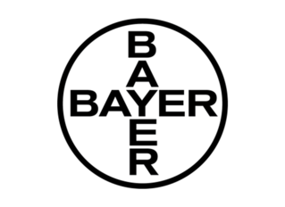
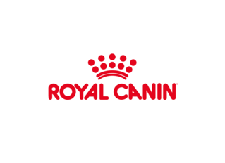

Nuestros angelitos esperan por tí
¿Deseas dar en adopción?
RegístraloCuando vas por la calle y logras ver a algún perro o gato caminando sin rumbo alguno, ¿no te has puesto a pensar qué será de su vida?
Las mascotas no son objetos inanimados sin sentimientos ni juguetes para divertirse un rato y luego ser relegados al olvido, son seres vivos con derechos que deben ser respetados y tratados con toda la consideración posible.
Las mascotas adoptadas suelen ser muy agradecidos y nobles por haber sido rescatados y reintegrados a una nueva familia, así que encontrarás un amigo fiel y muy cariñoso cada vez que entres por la puerta.
|  |  |
Marcas reconocidas a nivel nacional/internacional para darle mejor calidad de vida a tu mascota
Conoce más